The Discontrolled Tower Raid
A red player is required, and the boss hits hard enough that a full team with good gear (especially Machine%) is expected.
1Boss Fight Tips
| Symbol | Meaning |
|---|---|
| [O] | [○]: Circle shaped hitbox, explosion |
| [●] | [●]: Damage is determined by how far from the center of explosion |
| [!] | [!]: This attack is inevitable |
| [<<-->>] | [≪--≫]: Circle AoE, you have to get away from each other |
| [->><<-] | [-≫≪-]: Stack Damage, you have to group up |
| [|||] | [|||]: Straight line attack (vertical) |
| [=] | [=]: Straight line attack (horizontal) |
| [*] | [＊]: Various direction attack |
| Resist Reset [X] | Resist Reset [X]: Reset debuff of [X] attribute |
| [Death Sentence] | [Death Sentence]: You have to be fully healed when this ends |
- [1] If you drop items inside the boss room, they will remain there the next time you enter. You can drop Moon Atomizers, healing items, Scape Dolls, and other supplies as soon as you enter, and use them in the next run.
- [2] MAG is unequipped when entering the boss room or after dying. Press F2 to re-equip.
- [3] Like Epsilon, the boss only takes damage when its shield is open.
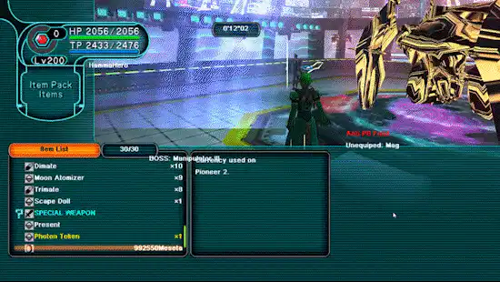
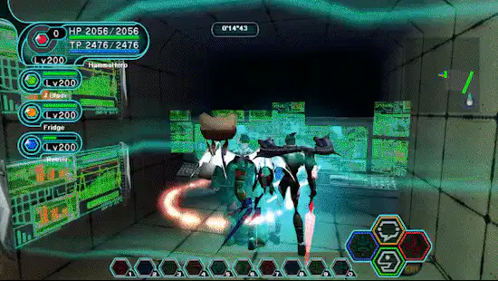
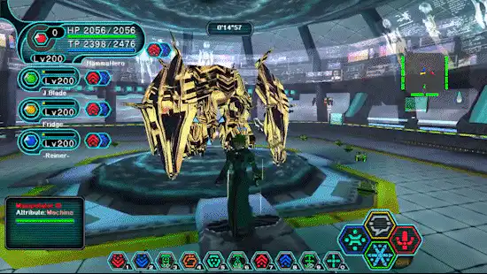
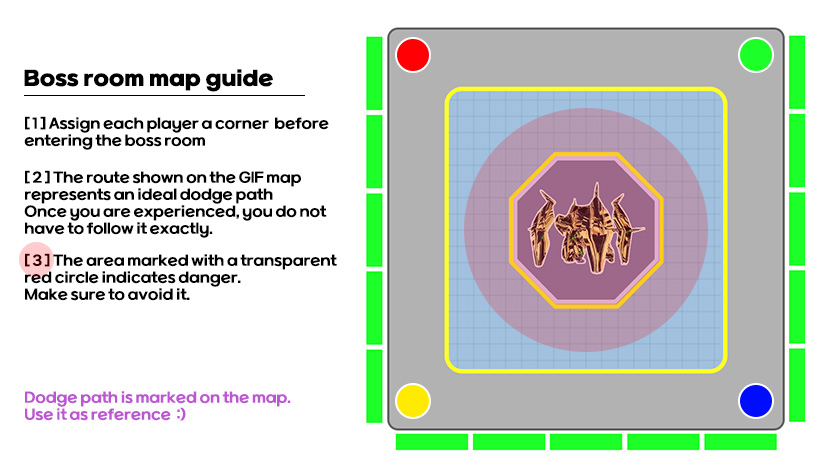
2[O]Explosion
[1] When the Explosion text appears, move outside the red marked area.
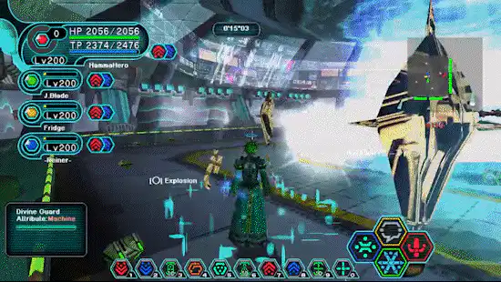
3[|||]Thunder Line / Thunder Maze - α -
- [1] Before the lightning attack, an effect shows where it will strike. When the purple effect appears, move away from that spot.
- [2] If you see the text Thunder Line 1 2 3 5, the 4th area is the safe zone.
- [3] If you see the text Thunder Line 1 2 4 5, the 3th area is the safe zone. / Thunder Line 1 3 5, the 2 4th area is the safe zone.
[4] Thunder Maze - α - alternates danger zones in this order: 2 4 → 1 3 5 → 2 4 → 1, 3 5. It’s easier if you think of dodging in the middle area first.
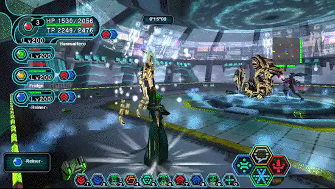
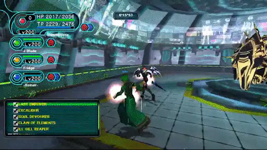
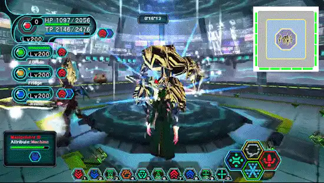
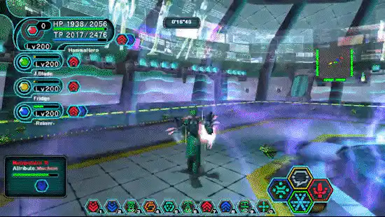
4[<<-->>] [O]Ancient Rafoie - Duality -
[Step 1] When the text ≪--≫ [O] Ancient Ratoie -Duality- appears, all players should wait in the corners.
[Step 2] Purple light appears in this order: Red → Green → Yellow → Blue, and each spot explodes.
[★] Stand at each corner and move only after the purple effect appears.
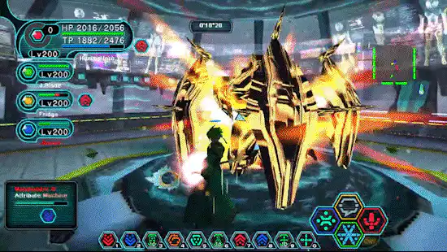
5[@] [O][X]Divine Punishment / Divine Cross
- [1] When the text Coordinate Charge appears, it forces the player to move to the corner of the map.
- [2] Position yourself in the circle near the boss to trigger the explosion (standing too close can cause overlapping damage to players).
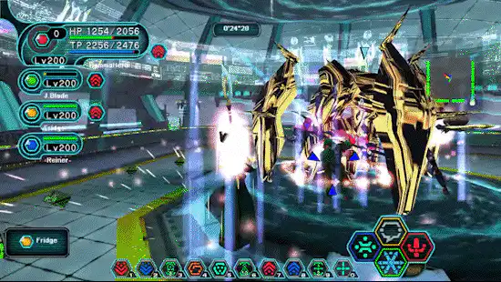
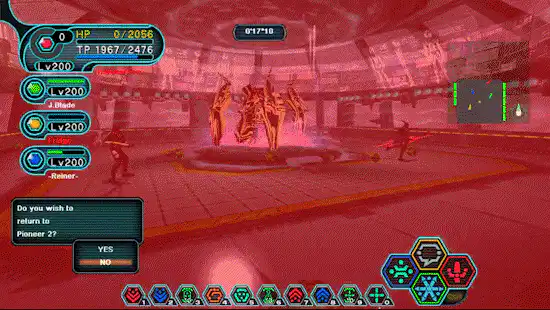
6[?] [!][O]Get the 4 Orbs! / Catastrophe Flame
[1] [?] Get the 4 Orbs! - Go to the designated corner and approach the Orb to pick it up.
If your HP is low, heal first before grabbing the Orb, or you might die.
[2] [!][O] Catastrophe Flame - The closer you are to the boss, the more damage you take. Stay as close to the wall as possible.
Staying at the wall deals exactly 2000 HP damage. Good for triggering MAG invincibility.
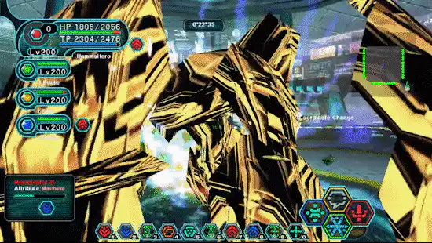
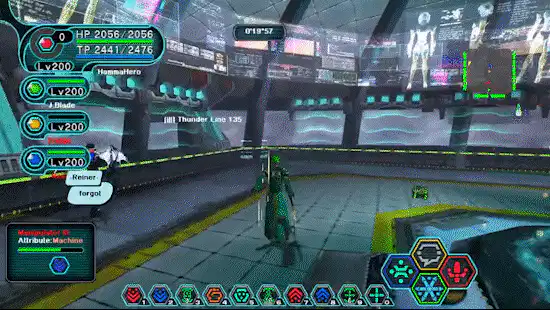
7[*]Ultimate Destruction [Cannon]
[1] It fires lasers in this order: 11 o’clock → 1 o’clock → 5 o’clock → 7 o’clock.
Check for the laser firing from the center, then dodge.
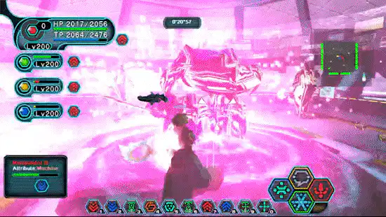
8Boss data
| Item | Value |
|---|---|
| Boss | Manipulator III / Divine Guard |
| HP | 2,180,000 |
| DEF | 2,500 |
| Weakness | Nothing |
| Areas | CCA → Control Tower → BOSS |
| Exclusive drop | Cladding of Manipulator III 1/10 (all IDs) |
A red player is required, and the boss hits hard enough that a full team with good gear (especially Machine%) is expected.
Role challenge - The Manipulator III: clear with no wipe in the boss room and without returning to Pioneer 2 from it, under 25 minutes.
9Gimmick timeline
The boss runs its gimmicks in a fixed order. Knowing what comes next is the difference between reacting and guessing. Timeline recorded by VEL(JP).
- 1Anti PB Field
- 2Explosion
- 3Thunder 5-4-3-2-1
- 4Coordinate Change + Divine Punishment
- 5Thunder 1-2-3-4-5
- 6Thunder Lines 4lines-1line
- 7Thunder 1245
- 8Thunder 135
- 9Thunder 3-2-4-1-5
- 10Thunder 1-5-2-4-3
- 11Thunder Maze α
- 12Divine Cross
- 13Coordinate Change + Quadruple Orbs
- 14Elemental Flow
- 15Ancient Rafoie -Duality-
- 16The Trinity
- 17Thunder 135
- 18Catastrophe Flame
- 19Thunder 3-2-4-1-5
- 20Thunder 1-5-2-4-3
- 21Thunder 135 + Blazing Breath
- 22Ultimate Destruction -Cannon-
- 23Thunder Lines 4lines-1line
- 24Thunder Maze β
- 25Coordinate Change + Quadruple Orbs
- 26Thunder 5-4-3-2-1
- 27Thunder 135
- 28Coordinate Change + Explosion
- 29Thunder 1-2-3-4-5
- 30Thunder 1245 + Toxic Blast
- 31Thunder Maze γ
- 32Coordinate Change + Divine Punishment
- 33Thunder 1245
- 34Thunder 135
- 35Ancient Rafoie -Duality-
- 36Divine Reckoning
- 37Thunder 3-2-4-1-5
- 38Thunder 1-5-2-4-3
- 39Vanishing World
- 40Overclock
- 41Anti PB Field
- 42Ultimate Destruction -Cannon-
- 43Thunder Maze γ
- 44Ancient Rafoie -Duality-
- 45Vanishing World
- 46Divine Reckoning
- 47Initialize ×3
- 48Forced Termination
Forced Termination repeats until the timer runs out.
10Quest-exclusive drops
| Enemy | Drop |
|---|---|
| Manipulator III | Cladding of Manipulator III 1/10 (all IDs) |
| Mericus | Syncesta 1/787 · State/Maintenance 1/1865 |
| Astark | Trap/Search 1/787 · Yasminkov 9000M 1/787 |
| Dorphon Eclair | Photon Token 1/400 · Storm Render 1/787 |
| Pazuzu | Photon Token 1/400 · Dark Matter 1/900 |
Some of these exclude a few Section IDs. Cladding of Manipulator III was raised from 1/12 to 1/10 for all IDs in Ver.0.826.
Materials from this raid are what the Bazaar FOmar NPC turns into Jointparts, which reworks six weapons. The full effect list is on the Weapon Enhancement page.
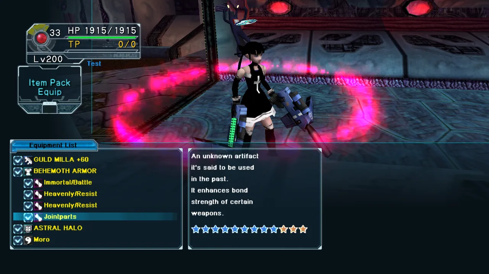
11The Manipulated Tower [Raid] - the EX version
A boss-only version at ★9. Same fight, higher numbers and changed gimmicks.
| Item | Value |
|---|---|
| Boss | Manipulator III ver.2 / Divine Guard |
| HP | 3,270,000 |
| DEF | 2,500 |
| Weakness | Nothing |
| Structure | Boss fight only, no trash mobs |
| Drops | GOLDEN HALO 1/39 (all IDs) · Photon Token 1/400 (Ill Gill, Pazuzu) |
The widescreen client (psobbw.exe) is required. A 4:3 client cannot run it.
Role challenge - The Manipulator III Ver.2: no wipe in the boss room and no returning from it.
Community tip: a Resta boost also widens Star Atomizer range, and a Reverser boost widens Moon Atomizer range.
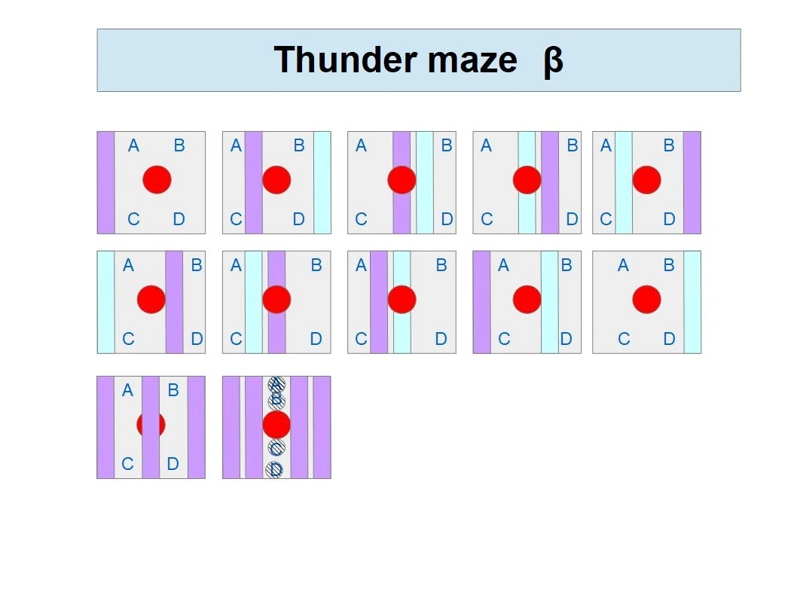
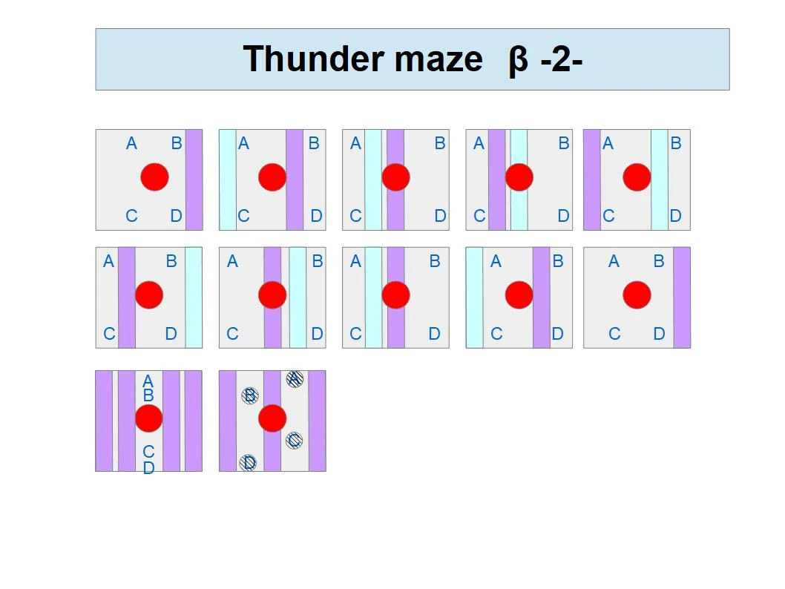